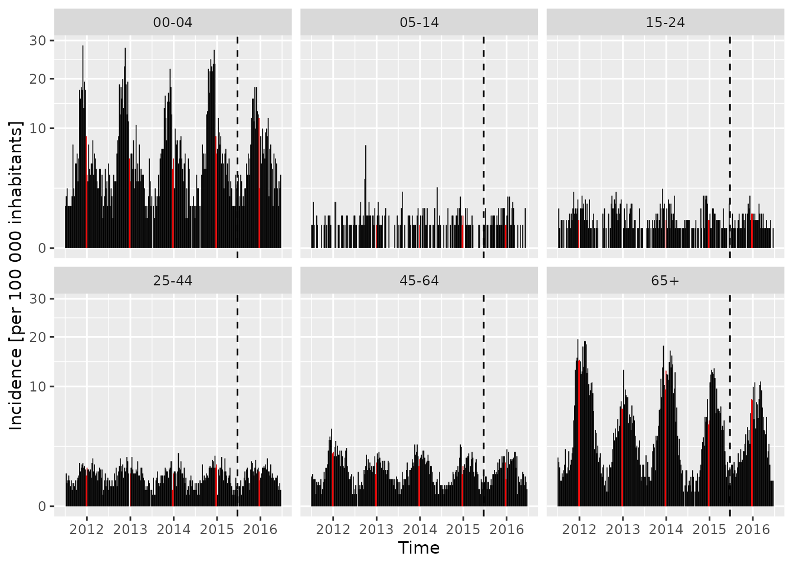
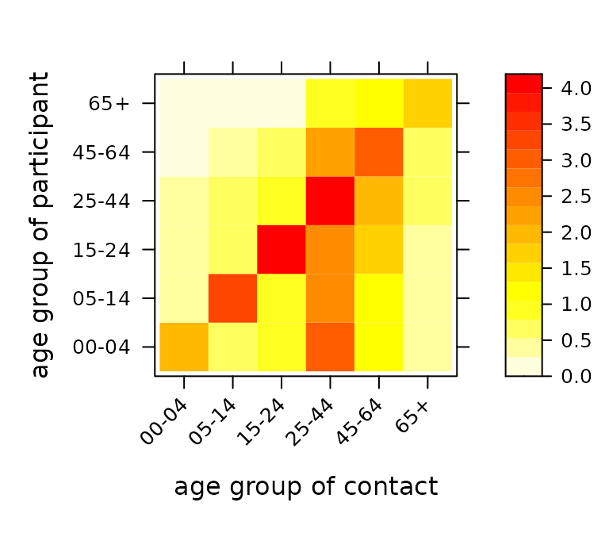
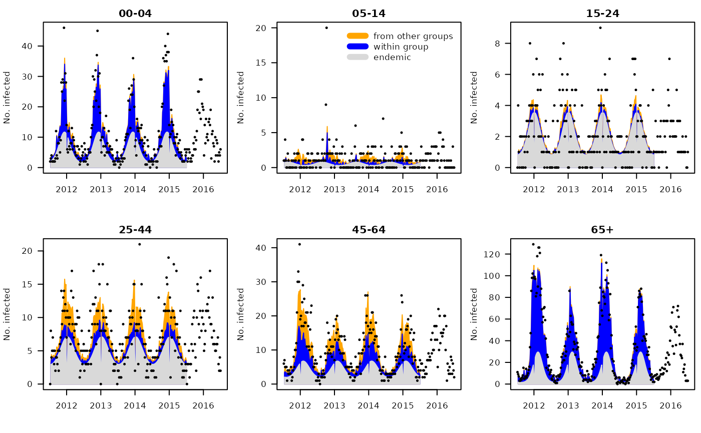
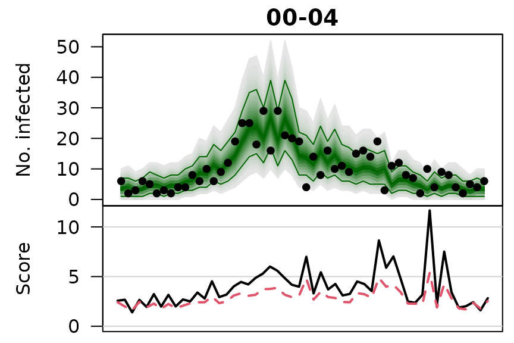
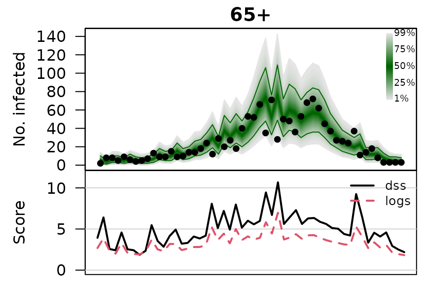

Forecasting age-stratified norovirus gastroenteritis counts using surveillance::hhh4
Sebastian Meyer
2021-03-31
Source:vignettes/BNV.Rmd
BNV.Rmd
options(digits = 4) # for more compact numerical outputs
library("HIDDA.forecasting")
library("ggplot2")In this vignette, we use modelling and forecasting methods provided by:
The corresponding software reference is:Höhle M, Meyer S, Paul M (2021). surveillance: Temporal and Spatio-Temporal Modeling and Monitoring of Epidemic Phenomena. R package version 1.19.1, https://CRAN.R-project.org/package=surveillance.
Data
We use age-stratified norovirus surveillance data from Berlin, Germany, together with an age-structured social contact matrix from the POLYMOD survey, as provided in the R package hhh4contacts:
library("hhh4contacts")These data have been originally analyzed in:
Meyer S and Held L (2017): “Incorporating social contact data in spatio-temporal models for infectious disease spread”. Biostatistics, 18(2), pp. 338–351. DOI: 10.1093/biostatistics/kxw051
Here we only consider models for spatially aggregated counts, i.e., without additional stratification by city district. More specifically, we will analyse age-stratified weekly counts \(Y_{gt}\) in a similar way as for the reference model 6 in:
Held L, Meyer S and Bracher J (2017): “Probabilistic forecasting in infectious disease epidemiology: the 13th Armitage lecture”. Statistics in Medicine, 36(22), pp. 3443–3460. DOI: 10.1002/sim.7363
Berlin norovirus counts
BNV <- noroBE(by = "agegroup", agegroups = c(1, 2, 2, 4, 4, 2),
timeRange = c("2011-w27", "2016-w26"))
BNV## -- An object of class sts --
## freq: 52
## start: 2011 27
## dim(observed): 260 6
##
## Head of observed:
## 00-04 05-14 15-24 25-44 45-64 65+
## [1,] 2 1 0 0 6 11
##
## head of neighbourhood:
## 00-04 05-14 15-24 25-44 45-64 65+
## 00-04 1.899 1.146 0.9775 3.18 1.315 0.5281
(NGROUPS <- ncol(BNV))## [1] 6
(GROUPS <- colnames(BNV))## [1] "00-04" "05-14" "15-24" "25-44" "45-64" "65+"We can plot the observed age-stratified counts using the default plot method for “sts” objects:
plot(BNV)
We will use the first four seasons, from week 2011/27 to week 2015/26, as training data, and assess forecasts during the following year (2015/27 to 2016/26).
TRAIN <- 2:(4*52)
TEST <- max(TRAIN) + 1:52There is also an autoplot variant based on ggplot2, which we use to plot the age-specific incidence based on the population fractions contained in the BNV object,
(popfracsBE <- population(BNV)[1,])## 00-04 05-14 15-24 25-44 45-64 65+
## 0.04594 0.07755 0.10438 0.30393 0.27879 0.18940and Berlin’s total population,
(popBE <- sum(pop2011)) # also from the "hhh4contacts" package, see ?pop2011## [1] 3501872as follows:
autoplot(BNV, population = 100000/popBE) +
## population: divides observed(BNV) by population(BNV)/(100000/popBE)
## Mod 1: highlight the Christmas period in each year
geom_col(aes(fill = epochInYear %in% c(52, 1)),
width = 7, show.legend = FALSE) +
scale_fill_manual(values = c("black", "red")) +
## Mod 2: separate training and test periods by a vertical line
geom_vline(aes(xintercept = as.numeric(date)[4*52] + .5), linetype = 2) +
ylab("Incidence [per 100 000 inhabitants]") + scale_y_sqrt()
Age-structured contact matrix
The neighbourhood slot of the BNV object contains a social contact matrix derived from the German subset of the POLYMOD survey, aggregated to match the age groups of the surveillance data:
neighbourhood(BNV)## 00-04 05-14 15-24 25-44 45-64 65+
## 00-04 1.89888 1.1461 0.9775 3.180 1.315 0.5281
## 05-14 0.21287 3.4406 0.9455 2.381 1.124 0.3861
## 15-24 0.05882 0.5168 4.5000 2.185 1.433 0.2731
## 25-44 0.26736 0.7049 1.2431 3.812 1.951 0.5035
## 45-64 0.11047 0.3023 0.8488 2.282 2.907 0.5727
## 65+ 0.05224 0.2537 0.2537 1.373 1.657 1.6642
## attr(,"agedistri")
## 00-04 05-14 15-24 25-44 45-64 65+
## 0.06873 0.15598 0.18378 0.22239 0.26564 0.10347Each entry gives the average number of contact persons of a certain age group a participant (of a certain age group) reports on a randomly assigned day, see Mossong et al. (2008, PLoS Medicine, DOI: 10.1371/journal.pmed.0050074). The “agedistri” attribute gives the age distribution of the participants.
We will employ an improved estimate of this contact matrix, which ensures reciprocity on the population level, i.e., the overall number of contacts of age group i with age group j should be the same as vice versa, see Wallinga et al (2006, American Journal of Epidemiology, DOI: 10.1093/aje/kwj317):
(C_reci <- contactmatrix(which = "reciprocal", grouping = c(1, 2, 2, 4, 4, 2)))## contact
## participant 00-04 05-14 15-24 25-44 45-64 65+
## 00-04 1.8991 0.7440 0.8362 2.952 1.142 0.5003
## 05-14 0.4408 3.3978 0.8150 2.421 1.092 0.4026
## 15-24 0.3681 0.6055 4.1941 2.488 1.588 0.2944
## 25-44 0.4462 0.6176 0.8544 3.949 2.045 0.6357
## 45-64 0.1882 0.3037 0.5945 2.229 2.894 0.7361
## 65+ 0.1213 0.1649 0.1623 1.020 1.084 1.6423
## attr(,"agedistri")
## 00-04 05-14 15-24 25-44 45-64 65+
## 0.04594 0.07755 0.10438 0.30393 0.27879 0.18940We can check reciprocity with respect to Berlin’s age distribution (also given in the “agedistri” attribute):
is_reciprocal <- function (C, population, tol = 0.001) {
Cpop <- C * population
all.equal(Cpop, t(Cpop), tolerance = tol, check.attributes = FALSE)
}
stopifnot(is_reciprocal(C_reci, popfracsBE))The hhh4contacts package provides a simple plotting function for such contact matrices:

NB: A general implementation to extract social contact matrices from surveys, including from POLYMOD, is available via the dedicated R package socialmixr, and I recommend to use that package in future projects.
Modelling
Given the counts from the previous week, \(Y_{.,t-1}\), we assume \(Y_{gt}\) to follow a negative binomial distribution with a group-specific overdispersion parameter and mean \[
\mu_{gt} = \nu_{gt} + \phi_{gt} \sum_{g'} c_{g'g} Y_{g',t-1} .
\] The endemic log-linear predictor \(\nu_{gt}\) contains group-specific intercepts, a Christmas effect (via a simple indicator for the calendar weeks 52 and 1), and group-specific seasonal effects of \(\sin(\omega t)\) and \(\cos(\omega t)\) terms, \(\omega=2\pi/52\). The epidemic log-linear predictor \(\phi_{gt}\) also contains group-specific intercept, but shared seasonality and no Christmas effect. For the contact matrix we use C_reci from above, normalized to a transition matrix C_reci/rowSums(C_reci), and compare this to models assuming homogeneous or no mixing between age groups, and a model where we estimate a power transformation \(C^\kappa\) via profile likelihood (hhh4contacts::fitC()) as in Meyer and Held (2017, see demo("hhh4contacts") for a spatially disaggregated version of the model).
DATAt <- list(t = epoch(BNV) - 1,
christmas = as.integer(epochInYear(BNV) %in% c(52, 1)))
mg_Creci <- hhh4(BNV, list(
end = list(f = addSeason2formula(~0 + fe(1, unitSpecific = TRUE) + christmas,
S = rep(1, NGROUPS))),
ne = list(f = addSeason2formula(~0 + fe(1, unitSpecific = TRUE)),
weights = matrix(1, NGROUPS, NGROUPS),
scale = C_reci, normalize = TRUE),
family = "NegBinM", data = DATAt, subset = TRAIN))Alternative 1: assuming homogeneous mixing between age groups
Alternative 2: assuming no mixing between age groups
Alternative 3: with a power transformation of the contact matrix
mg_Cpower <- fitC(mg_Creci, C_reci, normalize = TRUE, truncate = TRUE)Simple AIC comparison of the model fits to the training period:
AIC(mg_Creci, mg_Chom, mg_Cdiag, mg_Cpower)## df AIC
## mg_Creci 33 6051
## mg_Chom 33 6132
## mg_Cdiag 33 6055
## mg_Cpower 34 6035Parameter estimates from the model with power-adjusted contact matrix:
summary(mg_Cpower, maxEV = TRUE, reparamPsi = TRUE,
amplitudeShift = TRUE, idx2Exp = TRUE)##
## Call:
## hhh4(stsObj = object$stsObj, control = control)
##
## Coefficients:
## Estimate Std. Error
## ne.A(2 * pi * t/52) 0.2935 0.0846
## ne.s(2 * pi * t/52) -0.7187 0.1296
## exp(ne.1.00-04) 0.6814 0.1012
## exp(ne.1.05-14) 0.2502 0.0833
## exp(ne.1.15-24) 0.0892 0.0635
## exp(ne.1.25-44) 0.1729 0.0436
## exp(ne.1.45-64) 0.4091 0.0506
## exp(ne.1.65+) 0.9283 0.0790
## exp(end.christmas) 0.2557 0.0894
## exp(end.1.00-04) 4.5900 0.5535
## exp(end.1.05-14) 0.4942 0.2596
## exp(end.1.15-24) 1.7114 0.2172
## exp(end.1.25-44) 4.5869 0.6043
## exp(end.1.45-64) 3.6639 0.5819
## exp(end.1.65+) 6.7497 1.0767
## end.A(2 * pi * t/52).00-04 0.9352 0.1416
## end.A(2 * pi * t/52).05-14 0.4800 0.5182
## end.A(2 * pi * t/52).15-24 0.7334 0.1015
## end.A(2 * pi * t/52).25-44 0.4391 0.0971
## end.A(2 * pi * t/52).45-64 0.6105 0.1456
## end.A(2 * pi * t/52).65+ 1.4792 0.1871
## end.s(2 * pi * t/52).00-04 -1.0626 0.0646
## end.s(2 * pi * t/52).05-14 0.8237 0.3417
## end.s(2 * pi * t/52).15-24 -1.5081 0.0516
## end.s(2 * pi * t/52).25-44 -1.5711 0.0541
## end.s(2 * pi * t/52).45-64 -2.0013 0.0745
## end.s(2 * pi * t/52).65+ -2.1941 0.0700
## overdisp.00-04 0.0775 0.0187
## overdisp.05-14 0.4756 0.1305
## overdisp.15-24 0.0695 0.0526
## overdisp.25-44 0.0404 0.0182
## overdisp.45-64 0.0361 0.0133
## overdisp.65+ 0.0756 0.0133
##
## Epidemic dominant eigenvalue: 0.48 -- 0.86
##
## Log-likelihood: -2983
## AIC: 6035
## BIC: 6209
##
## Number of units: 6
## Number of time points: 207
##
## Power-adjusted C: 0.40 (95% CI: 0.23 to 0.67)
## plot estimated endemic-epidemic decomposition
##plot(mg_Cpower, units = NULL, pch = 20,
## legend = 2, legend.args = list(legend = c("epidemic", "endemic")))
## additional decomposition into AR effects and effects of other age groups
plotHHH4_fitted_groups(mg_Cpower, groups = GROUPS, units = NULL, pch = 20,
legend = 2, legend.args = list(legend = c("from other groups", "within group", "endemic")))
par(mfrow = c(2,1), mar = c(0,5,1,1), las = 1)
plotHHH4_season_groups(mg_Cpower, component = "end", seasonStart = 27,
col = c("#D53E4F", "#FC8D59", "#FEE08B", "#E6F598", "#99D594", "#3288BD"),
conf.level = NULL, xaxt = "n", xlab = "", ylim = c(0, 5), yaxs = "i",
ylab = "endemic seasonal effects")
par(mar = c(3,5,1,1))
with(data.frame(time = epochInYear(BNV) + (year(BNV)-2011)*52,
maxEV = getMaxEV(mg_Cpower))[1:52,],
plot(maxEV ~ time, ylim = c(0, 1), type = "l", lwd = 3, yaxs = "i", xlab = "",
ylab = "epidemic proportion", panel.first = quote(abline(v=52.5, lty=3))))One-week-ahead forecasts
Parameters are updated sequentially in the one-step-ahead procedure. However, the power parameter of C is held fixed at the initial estimate to reduce the runtime.
For each model, we compute the 52 “rolling” one-week-ahead forecasts during the last season. This takes roughly 4 seconds per model (we could parallelize using the cores argument of oneStepAhead()).
fits <- list("reciprocal" = mg_Creci,
"homogeneous" = mg_Chom,
"no mixing" = mg_Cdiag,
"power-adjusted" = mg_Cpower)owas <- lapply(fits, oneStepAhead, tp = range(TEST)-1, type = "rolling",
mapply(function(x, main) pit(x, plot = list(main = main, ylab = "Density")),
x = owas, main = names(owas))
## reciprocal homogeneous no mixing power-adjusted
## 0.8360 0.6753 0.3836 0.7077## reciprocal homogeneous no mixing power-adjusted
## 0.5292 0.7621 0.8302 0.6839
owas_scores <- lapply(owas, scores, which = c("dss", "logs"), individual = TRUE, reverse = FALSE)
lapply(owas_scores, function(x) cbind(apply(x, 3:2, mean), overall=apply(x, 3, mean)))## $reciprocal
## 00-04 05-14 15-24 25-44 45-64 65+ overall
## dss 4.139 1.448 1.292 3.070 3.217 5.022 3.031
## logs 2.902 1.516 1.537 2.449 2.568 3.424 2.399
##
## $homogeneous
## 00-04 05-14 15-24 25-44 45-64 65+ overall
## dss 4.368 1.431 1.288 3.051 3.183 5.234 3.093
## logs 2.984 1.501 1.531 2.446 2.552 3.508 2.420
##
## $`no mixing`
## 00-04 05-14 15-24 25-44 45-64 65+ overall
## dss 3.910 1.450 1.320 3.030 3.324 4.986 3.003
## logs 2.834 1.504 1.544 2.422 2.601 3.408 2.385
##
## $`power-adjusted`
## 00-04 05-14 15-24 25-44 45-64 65+ overall
## dss 3.979 1.464 1.325 3.048 3.257 5.001 3.012
## logs 2.850 1.518 1.549 2.434 2.582 3.415 2.391
owas_quantiles <- lapply(owas, quantile, probs = 1:99/100)
.osaplot <- function (model) {
sapply(seq_along(GROUPS), function (group) {
osaplot(quantiles = owas_quantiles[[model]][,group,], probs = 1:99/100,
observed = owas[[model]]$observed[,group],
scores = owas_scores[[model]][,group,],
start = TEST[1], xlab = "", main = GROUPS[group],
fan.args = list(ln = c(0.1,0.9), rlab = NULL),
key.args = if(group==length(GROUPS)) list(start=max(TEST)-2, rcex=0.6),
scores.args = list(xaxt = "n", ylim = range(owas_scores[[model]]),
lab = c(7,3,0), panel.first = grid(nx=NA,ny=NULL,lty=1)),
legend.args = if(group==length(GROUPS)) list())
})
}
.osaplot("no mixing")